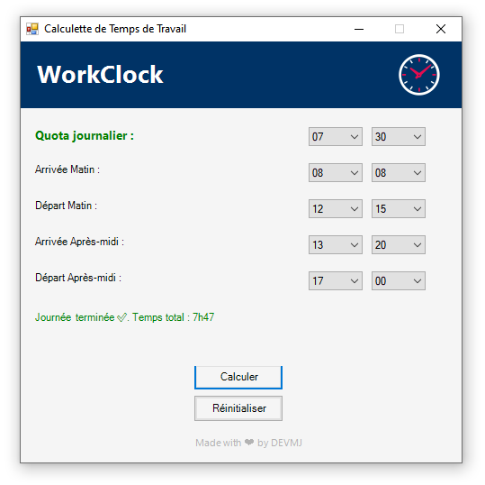

Affichage du code :
Add-Type -AssemblyName System.Windows.Forms
Add-Type -AssemblyName System.Drawing
$margeGauche = 14 ;
$couleurbleu = [System.Drawing.Color]::FromArgb(0, 51, 102)
# === Fenêtre principale ===
$form = New-Object System.Windows.Forms.Form
$form.Text = "Calculette de Temps de Travail"
$form.Size = New-Object System.Drawing.Size(500, 500)
$form.StartPosition = "CenterScreen"
$form.FormBorderStyle = "Fixed3D"
$form.MaximizeBox = $false
$form.BackColor = [System.Drawing.Color]::FromArgb(245, 245, 245)
# === Chargement du logo base64 depuis le fichier ===
$base64Logo = "iVBORw0KGgoAAAANSUhEUgAAAb8AAAHMCAYAAABFpaYdAAAACXBIWXMAAAsTAA [...]
# === Conversion en image ===
$bytes = [System.Convert]::FromBase64String($base64Logo)
$stream = New-Object System.IO.MemoryStream(,$bytes)
$image = [System.Drawing.Image]::FromStream($stream)
# === Ajout dans un PictureBox ===
$pictureBox = New-Object System.Windows.Forms.PictureBox
$pictureBox.Size = New-Object System.Drawing.Size(46, 46)
$pictureBox.Location = New-Object System.Drawing.Point(420, 14)
$pictureBox.SizeMode = [System.Windows.Forms.PictureBoxSizeMode]::StretchImage
$pictureBox.BackColor = [System.Drawing.Color]::FromArgb(0, 51, 102)
$pictureBox.Image = $image
$form.Controls.Add($pictureBox)
# === HEADER GRAPHIQUE ===
$headerPanel = New-Object System.Windows.Forms.Panel
$headerPanel.Size = New-Object System.Drawing.Size(600, 74)
$headerPanel.BackColor = $couleurbleu
$headerPanel.Dock = "Top"
$form.Controls.Add($headerPanel)
# Label "WorkClock"
$labelHeader = New-Object System.Windows.Forms.Label
$labelHeader.Text = "WorkClock"
$labelHeader.ForeColor = [System.Drawing.Color]::White
$labelHeader.Font = New-Object System.Drawing.Font("Segoe UI", 20, [System.Drawing.FontStyle]::Bold)
$labelHeader.AutoSize = $true
$headerPanel.Controls.Add($labelHeader)
$labelHeader.Location = New-Object System.Drawing.Point($margeGauche, 16)
# Label Footer
$labelFooter = New-Object System.Windows.Forms.Label
$labelFooter.Text = "Made with ❤ by DEVMJ"
$labelFooter.ForeColor = [System.Drawing.Color]::FromArgb(50, 179, 179, 179)
$labelFooter.Font = New-Object System.Drawing.Font("Segoe UI", 8, [System.Drawing.FontStyle]::Regular)
$labelFooter.AutoSize = $true
#$labelFooter.Location = New-Object System.Drawing.Point(300,492)
# Centrage horizontal et vertical
$LabelFooter.Location = New-Object System.Drawing.Point(
(($Form.ClientSize.Width - $LabelFooter.Width) / 2),
($Form.ClientSize.Height - $LabelFooter.Height - 1)
)
# Création du tooltip
$toolTip = New-Object System.Windows.Forms.ToolTip
$toolTip.SetToolTip($labelFooter, "En savoir plus")
# Curseur en forme de main
$LabelFooter.Cursor = [System.Windows.Forms.Cursors]::Hand
# Action au clic -> ouvre GitHub
$LabelFooter.Add_Click({
Start-Process "https://github.com/DEVMJ00/WorkClock"
})
$form.Controls.Add($labelFooter)
function Add-TimeInput {
param (
[string]$labelText,
[int]$top,
[int]$defaultHour,
[int]$defaultMinute,
[string]$ForeGroundColor = "Black"
)
# Labels
$label = New-Object System.Windows.Forms.Label
$label.Text = $labelText
$label.Location = New-Object System.Drawing.Point($margeGauche, ($top+15))
$label.Size = New-Object System.Drawing.Size(200, 40)
$label.ForeColor = [System.Drawing.Color]::$ForeGroundColor
$form.Controls.Add($label)
if ($labelText -eq "Quota journalier :") {
$label.Font = New-Object System.Drawing.Font("Segoe UI", 10, [System.Drawing.FontStyle]::Bold)
}
# ComboBox Heure
$comboHeure = New-Object System.Windows.Forms.ComboBox
$comboHeure.Location = New-Object System.Drawing.Point(320, ($top+15))
$comboHeure.Width = 60
$comboHeure.DropDownStyle = 'DropDownList'
$comboHeure.Items.AddRange((0..23 | ForEach-Object { "{0:D2}" -f $_ }))
$comboHeure.SelectedItem = "{0:D2}" -f $defaultHour
$form.Controls.Add($comboHeure)
# ComboBox Minute
$comboMinute = New-Object System.Windows.Forms.ComboBox
$comboMinute.Location = New-Object System.Drawing.Point(390, ($top+15))
$comboMinute.Width = 60
$comboMinute.DropDownStyle = 'DropDownList'
$comboMinute.Items.AddRange((0..59 | ForEach-Object { "{0:D2}" -f $_ }))
$comboMinute.SelectedItem = "{0:D2}" -f $defaultMinute
$form.Controls.Add($comboMinute)
# Retourner les objets créés
return @{ Heure = $comboHeure; Minute = $comboMinute }
}
function Check-saisie($saisie) {
$h = $saisie['Heure'].SelectedItem
$m = $saisie['Minute'].SelectedItem
if (-not $h -or -not $m) {
Write-Host "Erreur : une valeur n'est pas sélectionnée correctement."
return 0
}
try {
return ([int]$h * 60) + [int]$m
} catch {
Write-Host "Erreur de conversion : $_"
return 0
}
}
$inputQuota = Add-TimeInput -labelText "Quota journalier :" -top 80 -defaultHour 7 -defaultMinute 30 -ForeGroundColor "Green"
$inputMatinArrivee = Add-TimeInput -labelText "Arrivée Matin :" -top 120 -defaultHour 9 -defaultMinute 0
$inputMatinDepart = Add-TimeInput -labelText "Départ Matin :" -top 160 -defaultHour 12 -defaultMinute 0
$inputApremArrivee = Add-TimeInput -labelText "Arrivée Après-midi :" -top 200 -defaultHour 13 -defaultMinute 0
$inputApremDepart = Add-TimeInput -labelText "Départ Après-midi :" -top 240
# === Résultat ===
$resultLabel = New-Object System.Windows.Forms.Label
$resultLabel.Location = New-Object System.Drawing.Point($margeGauche, 300)
$resultLabel.Size = New-Object System.Drawing.Size(360, 60)
$resultLabel.ForeColor = "Green"
$resultLabel.Text = ""
$form.Controls.Add($resultLabel)
# === Bouton Calculer ===
$calcButton = New-Object System.Windows.Forms.Button
$calcButton.Text = "Calculer"
$calcButton.Size = New-Object System.Drawing.Size(100, 30)
$form.Controls.Add($calcButton)
# Centrer le bouton à l'initialisation
$calcButton.Location = New-Object System.Drawing.Point(
[Math]::Max(0, ($form.ClientSize.Width - $calcButton.Size.Width) / 2), 357)
# === Événement click ===
$calcButton.Add_Click({
$arrivee_matin = Check-saisie $inputMatinArrivee
$depart_matin = Check-saisie $inputMatinDepart
$arrivee_aprem = Check-saisie $inputApremArrivee
$depart_aprem = Check-saisie $inputApremDepart
$quota_journalier = Check-saisie $inputQuota
# Cas où l'après-midi est remplie
if ($depart_aprem -and $depart_aprem -ne 0) {
if (
$arrivee_matin -ge $depart_matin -or
$arrivee_aprem -ge $depart_aprem -or
$depart_matin -gt $arrivee_aprem
) {
[System.Windows.Forms.MessageBox]::Show(
"L'heure d'arrivée ne peut pas être supérieure ou égale à celle du départ.",
"Erreur de saisie", 'OK', 'Error')
return
}
# Calcul normal de la journée complète
$total_minutes = ($depart_matin - $arrivee_matin) + ($depart_aprem - $arrivee_aprem)
$manquant = $quota_journalier - $total_minutes
if ($manquant -le 0) {
$resultLabel.ForeColor = "Green"
$resultLabel.Text = "Journée terminée ✅. Temps total : {0}h{1:D2}" -f `
([math]::Floor($total_minutes / 60)), ($total_minutes % 60)
} else {
$resultLabel.ForeColor = "OrangeRed"
$resultLabel.Text = "Temps manquant : {0}h{1:D2}" -f `
([math]::Floor($manquant / 60)), ($manquant % 60)
}
# Cas où l’après-midi est en cours
} else {
# On vérifie uniquement la cohérence du matin
if ($arrivee_matin -ge $depart_matin) {
[System.Windows.Forms.MessageBox]::Show(
"L'heure d'arrivée matin ne peut pas être supérieure ou égale à celle du départ.",
"Erreur de saisie", 'OK', 'Error')
return
}
# Calcul du temps uniquement pour le matin
$total_minutes = $depart_matin - $arrivee_matin
$manquant = $quota_journalier - $total_minutes
# ✅ Cas où le matin suffit à lui seul
if ($manquant -le 0) {
$resultLabel.ForeColor = "Green"
$resultLabel.Text = "Journée terminée ✅. Temps total : {0}h{1:D2}" -f `
([math]::Floor($total_minutes / 60)), ($total_minutes % 60)
return
}
# Sinon, on estime l'heure de fin si l'après-midi commence maintenant
$heure_estimee = $arrivee_aprem + $manquant
$heure_fin = "{0}h{1:D2}" -f ([math]::Floor($heure_estimee / 60)), ($heure_estimee % 60)
$resultLabel.ForeColor = "OrangeRed"
$resultLabel.Text = "Temps manquant : {0}h{1:D2}`nFin estimée : $heure_fin" -f `
([math]::Floor($manquant / 60)), ($manquant % 60)
}
})
# === Bouton Réinitialiser ===
$resetButton = New-Object System.Windows.Forms.Button
$resetButton.Text = "Réinitialiser"
$resetButton.Size = New-Object System.Drawing.Size(100, 30)
$resetButtonX = $calcButton.Location.X
$resetButtonY = $calcButton.Location.Y + 5 + $calcButton.Size.Height
$resetButton.Location = New-Object System.Drawing.Point($resetButtonX, $resetButtonY)
$form.Controls.Add($resetButton)
# Événement : efface tous les champs
$resetButton.Add_Click({
$inputQuota.Heure.SelectedIndex = 7
$inputQuota.Minute.SelectedIndex = 30
$inputMatinArrivee.Heure.SelectedIndex = 9
$inputMatinArrivee.Minute.SelectedIndex = 0
$inputMatinDepart.Heure.SelectedIndex = 12
$inputMatinDepart.Minute.SelectedIndex = 0
$inputApremArrivee.Heure.SelectedIndex = 13
$inputApremArrivee.Minute.SelectedIndex = 0
$inputApremDepart.Heure.SelectedIndex = 0
$inputApremDepart.Minute.SelectedIndex = 0
})
# === Affichage ===
$form.Topmost = $true
$form.Add_Shown({ $form.Activate() })
[void]$form.ShowDialog()